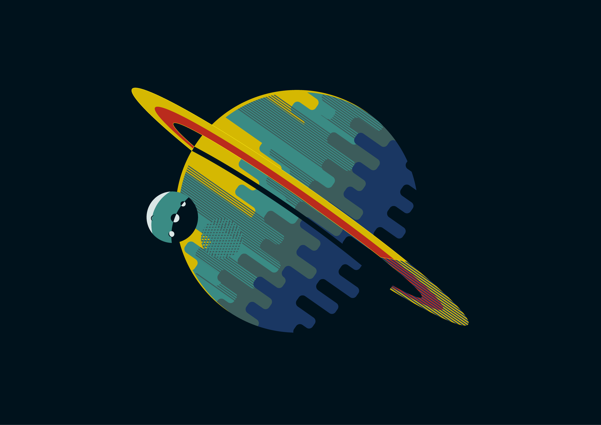

Setting

The setting is one if not the most important part of a good universe it
is the universe itself. You will have to decide if you want this to be
in our real universe or an entirely new place with different rules so,
do you want to start smaller with a solar system, a planet, anything
find your starting point and well move on from here.
Physics

After you have decided where you want everything to take place,
let's talk about physics! How a universe works is vital to how
characters act and what they can do. In our universe you are
pulled to massive things like planets because of gravity, is
there anything like that in your universe? think about that
for a minute how do things move here what makes up the space
that is here are objects made of atoms or molecules? or are
obects simply there made up of one big peice instead of smaller
peices?
Life
Life is what makes a universe and story interesting is spices
things up and makes them changing and fun, life can be anything
from micro organisms to complex beings such as animals and in
our universe humans. What kind of life (if any) resides within
your space? Who are your characters? What other species live
in harmony with them? Are there conflicts between species?
Let's review everything above
| Setting | Physics | Life |
|---|---|---|
| where do you want to start? | what are things made of? | what life exists here? |
| where is the main setting for the story? | what forces keep your universe together? | who are your characters? |
See this video below to further your knowledge in world building.
Great now with this information in your brain
let's test out these skills in a new universe.
Click this link to try it out yourself.